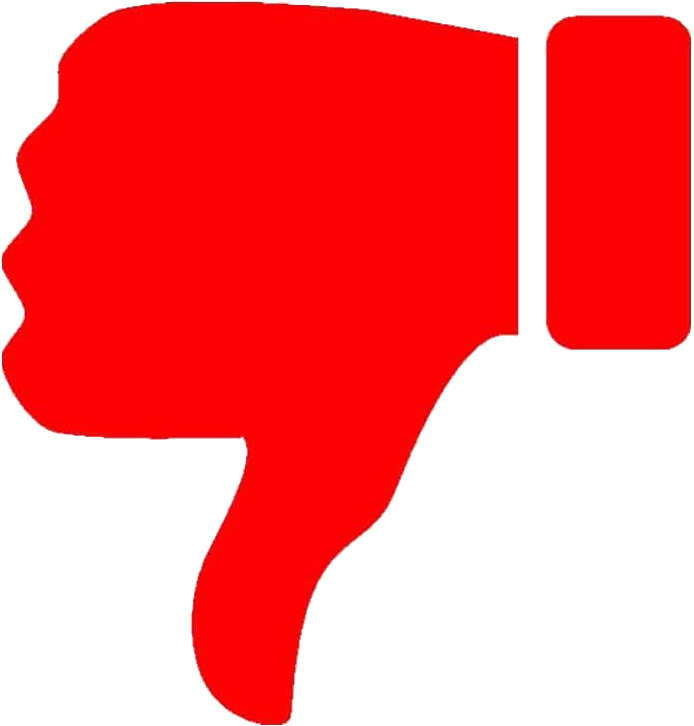

Las buenas prácticas de programación indican las técnicas que le ayudarán a producir programas más claros, comprensibles y fáciles de mantener.
Los tips para prevenir errores contienen sugerencias para exponer errores y eliminarlos de sus programas; muchos describen aspectos de programación que evitan que los errores entren siquiera a los programas.

Los errores comunes de programación señalan los errores que cometen los estudiantes con frecuencia. Estos errores comunes de programación reducen la probabilidad de que usted cometa los mismos errores
Las observaciones de ingeniería de software resaltan los asuntos de arquitectura y diseño que afectan en la construcción de sistemas de software, en especial los sistemas de gran escala.